Rhythms
If the rhythm title is red, the rhythm is a LETHAL
Atrial Rhythms
P waves and PR segment identify the atrial conduction pathways of cardiac cycles
Changes in the PR interval provide the identifying characteristics of the various atrial arrhythmias
Atrial rates are affected by both sympathetic and parasympathetic stimulation of the CNS
Atrial Rhythm Characteristics
- Atrial arrhythmias arise from alternate pacemakers within atrial tissues, therefore the morphology and characteristics of the P wave will be altered due to variant atrial pathways
- P waves may be notched, demonstrate biphasic patterns, or exhibit other morphological changes related to alternate pathways
- AV response may also be affected by alternate entry patterns between different transmission pathways and electrical patterns
- The most chaotic and dysrhythmic appearance will be related to fibrillating impulses (fibrillation = individual cells reach automaticity and fire in an uncoordinated fashion with respect to other adjacent cells – the muscle is quivering)
Normal Sinus Rhythms
- Regular Rhythm
- Rate 60-100 BPM
- All intervals "normal"
- PR 0.12-0.20 seconds consistent
- QRS 0.06-0.10 seconds
- QT greater than 1/2 R:R interval (usually less than .45 seconds), notify physician if greater than .49 sec
- R:R .60-1.0 seconds

Sinus Bradycardia
- Rhythm regular
- Rate less than 60 BPM
- Intervals
- PR 0.12 - 0.20 seconds consistent
- QRS 0.06 - 0.10 seconds
- QT less than 0.45 seconds
- R:R greater than 1.0 seconds

Sinus Tachycardia
- Regular Rhythm
- Rate greater than 100 BPM
- Intervals
- PR 0.12 - 0.20 seconds consistent
- QRS 0.06 - 0.10 seconds
- QT less than 0.45 seconds, may need to calculate QTC (QTc = QT/√R:R interval)
- R:R less than .60 seconds


Sinus Arrhythmia
- Irregular Rhythm
- Normal Conduction patterns and intervals
- P waves present and consistent
- PR 0.12 - 0.20 seconds consistent
- QRS 0.06 - 0.10 seconds
- QT less than 0.45 seconds
- R:R (heart rate) variable (usually 60-100 BPM)
- Other conduction abnormalities may be present in some individuals and if present would be added to the name of the rhythm, i.e. sinus arrhythmia with BBB

Sinus Arrest/Sinus Pause
- Rhythm irregular due to missing cardiac cycle(s)
- Intervals
- PR 0.12 - 0.20 seconds consistent
- QRS 0.06 - 0.10 seconds
- QT less than 0.45 seconds
- R:R prolonged interval during sinus arrest/pause, may not represent a direct proportion or the R:R interval

Atrial Fibrillation
- Irregular ventricular rate
- Chaotic baseline between QRS complexes
- Rate indicated as
- Controlled (ventricular response 60-100/minute) = “atrial fib with controlled rate”
- RVR (rapid ventricular response = > 100/minute) = “atrial fib with RVR”
- Bradycardia (ventricular response < 60/minute) = “atrial fib with bradycardia”
- QRS usually < 0.10 sec
- When the muscle is fibrillating – quivering, increase risk of clot formation within the atria, clots that break off may then pass through the ventricle an into circulation resulting in necrosis of tissue, PE in the lung, stroke if travels to the brain, other organ damage from systemic circulation.
- Prior to conversion of atrial fibrillation consider risk of clot formation, confirm with testing such as trans-esophageal echocardiogram (TEE) or other testing for presence of atrial clots
- Treat with anticoagulation prior to chemical or electrical rhythm conversion
Atrial Flutter
- Multiple P waves (F or flutter waves) per QRS
- Flutter waves are organized, these waves demonstrate a single morphological pattern throughout the ECG tracing
- A saw-toothed pattern to baseline between QRS complexes
- P:P interval will indicate a very rapid atrial rate – typically 300-350/minute
- Narrow QRS complex
 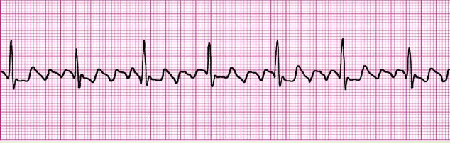
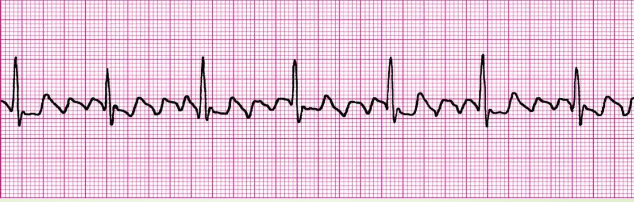
Atrial Tachycardia
- Partial P waves visible before QRS (merged with T wave)
- Narrow QRS (less than 0.10 seconds)
- Add Paroxysmal to name if change of rhythm noted on strip i.e see change from slower baseline rate to fast rate
- With very fast rhythms may need to calculate QTc rather than measure QT alone as sympathetic stimulation decreased T interval in a consistent manner i.e QTc = QT/√R:R interval


Supraventricular Tachycardia
- Ventricular rate greater than 100 BPM
- No visible P wave between QRS compexes
- Narrow QRS complex (less than 0.10 seconds)
- Add Paroxysmal to name if change of rhythm noted on strip i.e. see change from slow to fast rate
- With very fast rhythms may need to calculate QTc rather than measure QT alone
 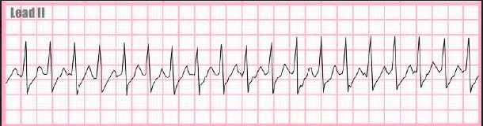
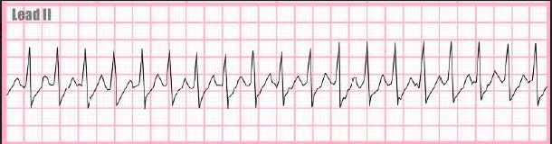
Premature Beats
When naming a rhythm which includes premature beats, name the underlying rhythm, then add the type of premature beat identified in the tracing- Sinus Rhythm w/ PAC
- Sinus Tachycardia w/ PVC
- Sinus Rhythm w/ PJC etc....
Premature Atrial Contraction (PAC)
- Irregular rhytm due to the premature beat
- Alternate morphology of P wave in premature beat(s)
- Intervals
- PR 0.12 - 0.20 seconds consistent except for the premature beat(s)
- QRS 0.06 - 0.10 seconds
- QT less than 0.45 seconds
- Frequently a compensatory pause (prolonged R:R interval) after the premature beat(s)


Premature Junctional Contraction (PJC)
- Irregular rhythm due to premature beat
- Intervals
- No PR or retrograde P wave fused to QRS (J wave) or premature beat
- PR 0.12 - 0.20 seconds consistent except for premature beat(s)
- QRS 0.06 – 0.10 seconds
- QT < 0.45 seconds
- Frequently a compensatory pause after the premature beat(s)
 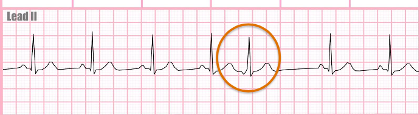
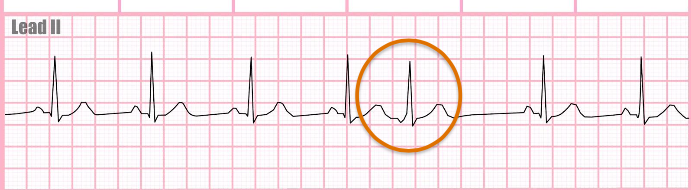
Premature Ventricular Contraction (PVC)
- Irregular rhythm due to premature beat
- Intervals
- No P wave for premature beat(s)
- PR 0.12 - 0.20 seconds except for premature beat(s)
- Alternate morphology of QRS for the premature beat(s) - wide and bazaar shaped
- QRS 0.06 - 0.10 seconds, consistent, except for premature beat(s)
- QRS > 0.12 seconds for premature beat(s)
- QT less than 0.45 seconds
- Frequently a compensatory pause after the premature beat(s)
- Frequency
- Every other beat PVC = bigeminy (objective frequency) 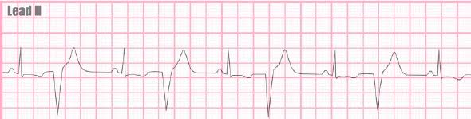
- Every third beat PVC = trigeminy (objective frequency) 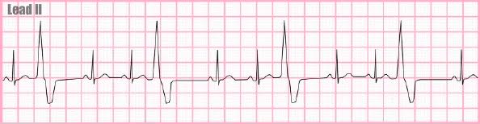
- Frequent, PVC usually 6 or more PVC a minute (subjective)
- Occasional, PVC noted througout shift (subjective)
- Rare, PVC noted during shift but not regularly (subjective)
- Unifocal: all PVCS consistent morphology (shape)
- Multifocal: PVCS with variable morphology
- Couplet: Two PVCS grouped together 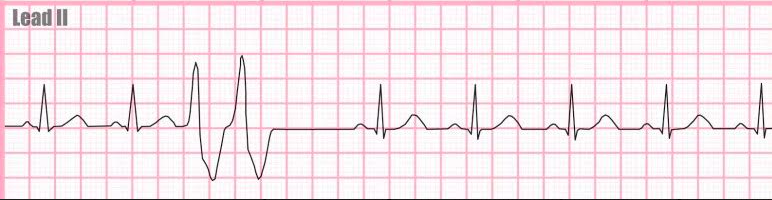

PAC Frequency
Atrial Bigeminy
- Every other beat is a PAC 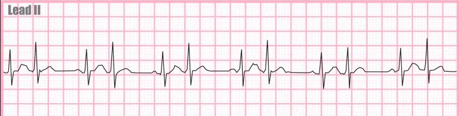
Atrial Trigeminy
- Every two beats is a PAC 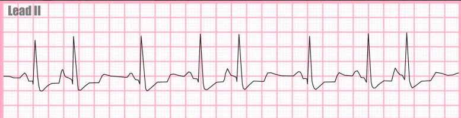
Junctional Rhythms
Junctional (escape) rhythms usually arise when faster atrial rhythms no longer suppress the automaticity of the atrial- ventricular (AV) node
Junctional pacemakers may be affected by sympathetic nerve stimulation compensating for decreased cardiac output as monitored and controlled by the central nervous system (CNS)
Junctional Rhythm
- Rhythm regular
- Rate 40-60 BPM
- Absent P wavees or retrograde P waves fused to the QRS complex - J waves, pattern is consistent
- QRS Interval - 0.06 - 0.10 sec
- QT Interval less than 0.45 sec
- R:R Interval greater than 1.00 sec
 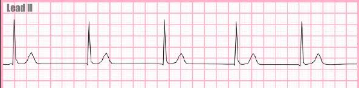
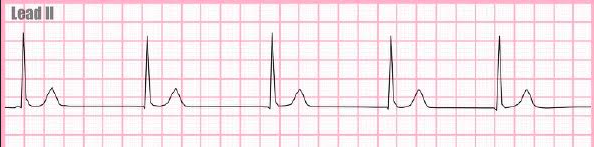
Accelerated Junctional Rhythm
- Rhythm Regular
- Rate 60-100 BPM
- Absent P waves or retrograde P waves fused to the QRS complex - J waves, pattern consistent
- QRS Interval 0.06 - 0.10 sec
- QT Interval less than 0.45 sec
- R:R Innterval 0.60 - 1.00 sec
Junctional Tachycardia
- Rhythm Regular
- Rate 100-150 BPM, at rates >150 BPM P waves may be hidden by the preceding T wave and thus be undetectable, these very fast rhythms are referred to as SVT (see atrial rhythms)
- Absent P waves or retrograde P waves fused to the QRS complex - J waves, pattern is consistent
- QRS interval - 0.06 - 0.10 sec
- QT interval less than 0.45 sec
- R:R interval less than 0.60 sec
Ventricular Rhythms
Characterized by wide QRS complex without P waves
Almost always indicate decreased CO due to decreased stroke volume
Frequent precursor to cardiac arrest
Normal rhythm of the dying heart
Idioventricular Rhythm
- Regular Rhythm
- Rate less than 40 BPM
- Absence of P waves
- QRS consistent morphology
- QRS interval greater than 0.12 seconds
Accelerated Idioventricular Rhythm
- Regular Rhythm
- Rate 40-100 BPM
- Absence of P waves
- QRS consistent morphology
- QRS greater than 0.12 seconds
Ventricular Tachycardia
- Regular Rhythm
- Rate greater than 100 BPM
- Absence of P waves
- QRS morphology consistent
- QRS interval greater than 0.12 seconds
- May occur with or without a pulse
Ventricular Fibrillation
- Chaotic tracing with no identifiable waveforms
- Does not generate cardiac output, no signs or symptoms of perfusion
Agonal
- Irregular rhythm, visible slowing between QRS
- Rate very slow
- Absence of P waves
- QRS greater than 0.12 seconds
Asystole
- No waves, isolectric line tracing from left to right
- If suspect possible fine ventricular fibrillation validate by use of AED, if no shock indicated per AED = asystole
Conduction Blocks
Blocks may occur in the normal conduction pathways as a result of injured or metabolically impaired conditions (scarred or ischemic tissue)
Areas below the atria subject to conduction blocks include the AV node and bundle branch pathways
AV blocks are differentiated from each other by rhythm regularity and PR interval patterns
AV blocks tend to progress from First degree thru Third degree
Bundle Branch Block
- Rhythm regular
- Rate 60-100 BPM
- P waves present and consistent morphology
- PR interval 0.12-0.20 sec
- QRS interval greater than 0.12 sec
- R:R interval consistent with heart rate
First Degree AV block
- Rhythm regular
- Rate less than 60 BPM but may be in a low normal range
- P waves present, ALWAYS have and associate QRS, and consistent morphology
- PR interval greater than .20 sec
- P:QRS 1:1 every P wave has an associated QRS complex
- QRS interval .06 - .10 sec
- R:R interval consistent and related to heart rate
Second Degree Type 1 AV Block
- Rhythm Irregular
- Rate usually less than 60 BPM but may be in low normal range
- P waves present and consistent morphology
- PR interval varies in lengthening pattern until a P wave without a QRS occurs, pattern repeats
- P:QRS = P greater than QRS atleast one P wave without an associated QRS
- QRS interval 0.06-0.10 sec
- R:R Interval varies
Second Degree Type 2 AV Block
- Rhythm regular or irregular depending on P wave conduction pattern
- Rate usually less than 60 BPM
- P waves present with consistent morphology, at least one P wave without an associated QRS
- PR interval consistent, may be normal or prolonged
- QRS Interval 0.06-0.10 sec
- R:R interval may be consistent or variable depending on conduction pattern
Second Degree Type 2 AV Block, 2:1 Conduction
- Rhythm regular
- Rate less than 60 BPM
- P waves present with consistent morphology, P waves without an associated QRS every other beat
- PR interval consistent, may be normal or prolonged
- QRS Interval 0.06-0.10 sec
- R:R interval may be consistent and prolonged due to slow ventricular rate

Third Degree Heart Block/Complete Heart Block
- Rhythm regular(ventricular)
- Rate usually less than 60 BPM
- P waves present and consistent, some P waves may be hidden by QRS or T waves
- PR interval variable and with or without consistent pattern lengthening or shortening varies between ventricular beats, no consistent lengthening pattern
- QRS Interval may be normal or wide
- R:R interval consistent, usually prolonged due to slow ventricular rate
Artificially Paced Rhythms
- Artificial pacemaker spikes prior to atrial or ventricular waveforms
- Pacer spikes generally appear as a straight line either positive or negative to the baseline
- Capture indicated by presence of a waveform attached to the spike
- Failure to capture indicated by presence of a pacer spike without an identifiable waveform
- Failure to sense determined by regularity of pacer spikes not coordinated with capture and/or native waveforms
Atrial Paced Rhythm
- Pacer spikes followed by P wave (may be small) with PR interval and native QRS (no pacer spike before the QRS)
- PR interval 0.12-0.20 sec
- QRS interval 0.06-0.10 sec
- R:R interval indicates rate of pacemaker setting (if only paced waveforms are present, if native beats are present the rate may be the patient’s inherent rate)
Ventricular Paced Rhythms
- Pacer spike followed by a QRS complex, usually wide
- Absence of P waves or presence of native (non-paced) P waves
- PR interval, if native P waves PR interval usually 0.20 seconds and dependent on artificial pacemaker setting
- QRS > 0.12 sec
- Rate reflects artificial pacemaker setting or inherent rate of the individual if native P waves are present
Atrial Ventricular Paced
- Artificial pacemaker spikes present for both atrial and ventricular waveforms, native beats may also be present
- P waves with associated pacer spike
- QRS complex with associated pacer spike
- Native beats may be present when inherent automaticity over- rides the artificial pacemaker settings, may include only native P wave, only native QRS, or complete native cardiac complex – native P, QRS, T waves
Failure to Capture
- Artifical pacemaker spike not followed by a cardiac waveform
- Capture may be intermittent or total failure to capture

Failure to Sense
- Artificial pacemaker spikes present in regular pattern not associated with inherent beats
- Pacemaker fires during normal/inherent cardiac cycles
- Inappropriate pacemaker spikes may not achieve capture due to refractory period of cardiac muscle response to inherent cardiac cycles, increase risk of lethal cardiac response

Failure to pace
- Presence of artifical pacemaker
- Pacemaker fires with capture part of the time
- R:R interval greater than pacemaker set rate without pacemaker spikes